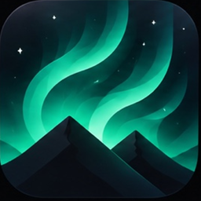

Lueur
Savoir quand et où lever les yeux pour voir une aurore boréale près de chez toi : ta chance ce soir, la meilleure heure et le meilleur coin à moins de 80 km, des alertes au bon moment. Payée une fois, sans abonnement, sans pub, sans compte.
Aide
Le score reste à 0. Plus tu es au sud, plus il faut un orage géomagnétique fort (Kp 7 à 8 vers Paris). Le score tient aussi compte de la nuit, de la lune et des nuages : en plein jour, il est toujours à 0.
Je ne reçois pas d'alerte. Vérifie que les notifications de Lueur sont autorisées (Réglages › Notifications › Lueur) et que l'actualisation en arrière-plan est active. iOS décide seul de l'heure exacte des vérifications.
Ma position est fausse. Lueur demande ta position seulement quand l'app est ouverte. Tu peux aussi enregistrer jusqu'à 5 spots à la main.
Autre question : inceept@gmail.com
In English
Lueur tells you when and where to look up to see the northern lights near you: tonight's chance, the best hour and spot within 80 km, and timely alerts. Paid once: no subscription, no ads, no account. The score depends on geomagnetic activity, darkness, the moon and clouds. Contact: inceept@gmail.com